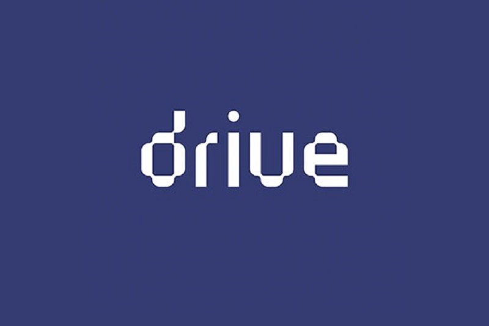

DRIVE
DRIVE is a cycle of conferences promoted by the Master in Design and intrinsic to
the theme of research. Next Saturday, April 17, 2021, starting at 9:45 am, the third
edition of DRIVE - Design Related Investigation will take place, which will be
registered online via Zoom.